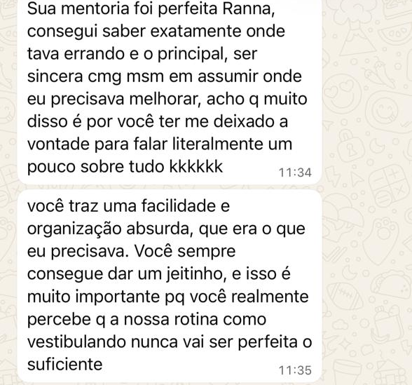

✦
Clareza
Saber exatamente o que você estuda hoje, e por quê. Sem achismo e sem culpa.
CLAREIA
Estudar com propósito, clareza e equilíbrio

O CLAREIA nasceu de quatro anos acompanhando alunos de pré-vestibular e vendo, de perto, o mesmo padrão: gente estudando muito e se sentindo perdida. Eu também passei por essa fase, sei o que é olhar para um cronograma impossível e achar que o problema é você.
Aqui a gente trabalha com uma ideia simples: leveza é diferente de moleza. Estudar de forma sustentável não é estudar menos; é estudar com direção, sabendo por quê você está fazendo cada coisa e conseguindo manter isso até o dia da prova.
É um acompanhamento individual e online para estudantes do ENEM e ensino médio que querem organizar seus estudos sem se perder no processo, nem emocionalmente, nem na rotina.
E, principalmente: o suporte aqui não é só técnico. Ansiedade, culpa e desânimo fazem parte do caminho, e você não vai atravessar isso sozinho.
Saber exatamente o que você estuda hoje, e por quê. Sem achismo e sem culpa.
Uma rotina que cabe na sua vida. Leveza é diferente de moleza.
Pequenos passos repetidos valem mais que maratonas que não se sustentam.
Dois formatos, o mesmo cuidado. A gente conversa e escolhe junto.
Uma agenda de estudos feita pra sua rotina, testada na prática e ajustada numa reunião final, um processo com começo, meio e fim, sem acompanhamento contínuo depois disso.
O mesmo cronograma testado e ajustado, mas com acompanhamento contínuo: a gente segue junto, semana a semana, reajustando a rota até a reta final.
O ponto de partida é o mesmo para os dois planos, a diferença começa depois da reunião de alinhamento.
Você responde a um questionário completo sobre rotina, metas e desafios.
Eu estudo suas respostas e monto um cronograma pensado pra sua realidade.
Você testa o cronograma na prática, no seu dia a dia real, por alguns dias.
A gente se encontra pra ajustar o cronograma com base no que funcionou no teste.
Histórias de quem viveu o processo na prática.

A primeira conversa é só isso: uma conversa. Sem compromisso, sem julgar.